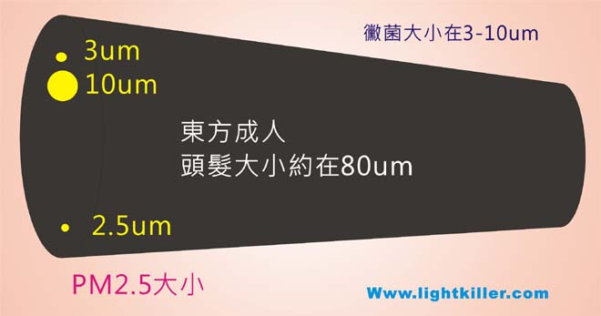

何謂PM2.5
PM2.5,中文稱懸浮微粒(Fine Particulate Matters) 係指懸浮在空氣中氣動粒徑小於2.5μm(微米)之大小,(直徑為10微米以下稱PM10),它的來源可分自然界及人為因素,自然界有火山暴發,海水蒸發帶起飄浮之鈉,及沙漠之塵埃...等等,人為因素則人為開墾之沙漠化,及石化工廠.發電廠.焚化爐.各類工廠.汽機車..等等所排放之廢氣,其中以人為之化學污染最為嚴重,依地區不同它佔全部污染之60-80%的量,而這些有毒物很容易經由空氣傳播,又因其顆粒物能夠在大氣中停留很長時間 ,其PM2.5之粒子,更可穿透肺泡直達血液,他是造成肺炎(癌),氣喘..呼吸道.心血管疾病殺手.
PM2.5示意圖

1cm=10mm=10,000um 髮絲大小約0.04-0.08mm(40-80um)間.西方人較細,東方人較粗,如果以東方人頭髮來看,PM2.5大小,則在髮絲1/25 到 1/30的大小,是極細微粉塵
全球PM2.5

全球PM2.5污染示意圖(圖來自US NASA) (目前最新變化則是印度最為嚴重,中國大陸則有改善,而在2020年新冠肺炎發生時,全球因工業及汽機車排放之PM2.5 也降低許多,天氣也是一大影響擴散條件,北台灣以東北季風時,空氣會比南台灣優
(科普小常識)如有注意在賣場販售之空氣濾清機,對於HEPA.這名詞就會常看到,其中高效率濾網(HEPA):最高等級可過濾0.3um懸浮微粒效率達99.97%,(但許多市售空氣清淨機,雖標榜HEPA,並非使用最高級之濾網及設計,甚至最平價過濾達85%也可稱HEPA,因此造成價差極大),另外超高效率濾網(ULPA):可過濾0.1um懸浮微粒效率達99.99%,但是如在污染嚴重區,此濾網大概2-3天就必需更新.除了昂貴外,並且也耗能源.噪音大,這是其缺點.
其中近來大陸開發嚴重以上海而言冬季常有超過300微克/立方米.北方城市更有高達500毫克/立方米之超重污染,其污染可遠飄至到台灣,而南台灣工廠產生之PM2.5也會飄至菲律賓,目前台灣PM2.5問題,主因還是島內問題,也因為近年來電力缺口增大,雖比例降低,但其總燃燒量還是不減,又因然國內因塞車時,汽機車怠速所排放PM2.5也比行駛中高,加上各地工廠林立,當沒有風的時段,空氣品質會非常糟,以有氣喘心血管病者,更容易誘發其疾病,有數據顯示,它也會引響到人的記憶力
家裡,辦公室PM2.5 會比面高?
這是有可能,當您家有3D Printer及Laser printer就會製造出,以3 D Printer量是最多,絕對會讓您家裡空氣品質汙染達超標級.另外家裡炒菜時未將排油煙機開啟,也是造成氣.粒浮微粒來源之一